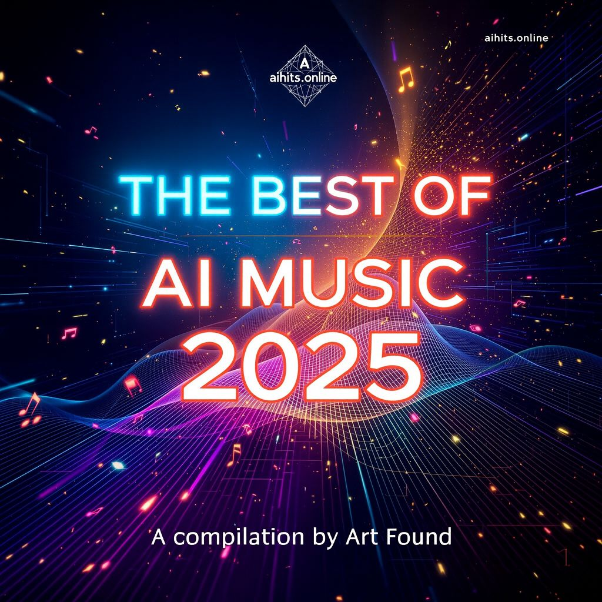

Probably The First Ever
The Best of AI Music 2025
A Groundbreaking Compilation Album
Best of AI Music 2025 is a groundbreaking compilation celebrating the most creative and inspiring tracks born from the fusion of human imagination and artificial intelligence. Be surprised. Be amazed. Be inspired.

Listen on Youtube
This album is non-commercial and FREE for all to listen to
Release
November 2025
Location
Canberra, Australia
Compiled by
Art Found
Scroll to explore